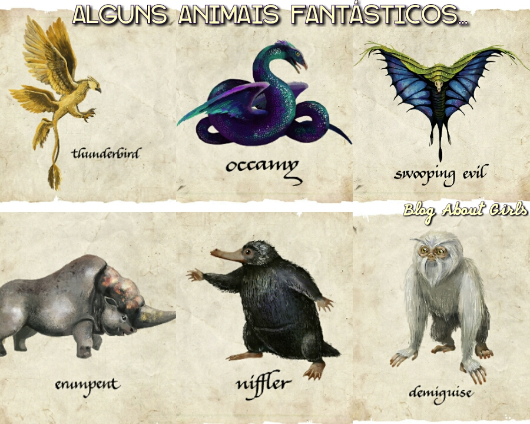

Animais Fantásticos

Bicho-papão
Um dos melhores professores de Defesa Contra as Artes das Trevas de Hogwarts nos ensinou o melhor feitiço para rebater um bicho papão: o riso. (E, claro, Riddikulus). Isso porque o bicho-papão é um não-ser que assume a forma do pior medo da pessoa que o vê, e para combatê-lo, precisamos transformá-lo em algo extremamente ridículo e patético.
No trailer, o bicho-papão aparece na forma do que parece um espelho, sendo transformado em um boneco mecânico por um aluno praticando o feitiço Riddikulus.
Acromântula
As cromântulas tem uma história interessante em Harry Potter: nosso querido gigante Hagrid, aliás, mantinha uma ‘escondida’ em seu tempo de escola - a mesma que depois foi viver na Floresta Proibida e tentou matar Harry e Rony quando ambos foram até lá com algumas dúvidas. Bons tempos.
Elas são aranhas gigantes que possuem fala humana e tem um veneno muito valorizado para o uso de poções. No trailer, uma aparece sendo atacada por um aluno.
Dementadores
Será que faremos uma pequena visita a Azkaban, a maior prisão bruxa da Grã-Bretanha? No trailer de Hogwarts Legacy podemos ver alguns dementadores vigiando um corredor escuro, que se parece muito com os corredores da conhecida prisão.
Os dementadores são não-seres das trevas - considerados um dos mais sujos - que se alimentam da felicidade humana e, assim, causam desespero e depressão a qualquer um que se aproximar deles. E eles também podem consumir a alma da pessoa, deixando-a assim em um estado vegetativo. Queridos, né?
Dragões
Dragões são criaturas que, essencialmente, precisam estar inseridas no mundo mágico. Eles são uma das mais famosas e, durante os filmes de Harry Potter, podemos ver diversas espécies, como o Meteoro-Chinês, Rabo-Córneo-Húngaro e o Focinho-Curto-Sueco.
Alguns deles aparecem no trailer, e parece que teremos aventuras bastante explosivas por lá. Um deles aparece atirando fogo em um estudante que se desvia dele e, no final do trailer, podemos ver um indo em direção ao castelo de Hogwarts.
Bom, eu também desviaria...
Arpéu
O Arpéu (do inglês Graphorn) é uma criatura mágica perigosa e explosiva, mas aparece no trailer de Hogwarts Legacy em um encontro com um estudante que parece muito amigável. Eles são bichos bastante raros e quase extintos nos filmes da franquia Animais Fantásticos (que se passam em 1926), mas como o jogo será durante 1800, poderemos ver algumas dessas incríveis criaturas.
Eles são enormes, possuem uma cor cinza-azulada - na maioria das vezes - e sua pele é tão dura que repele a maioria dos feitiços utilizados contra eles.